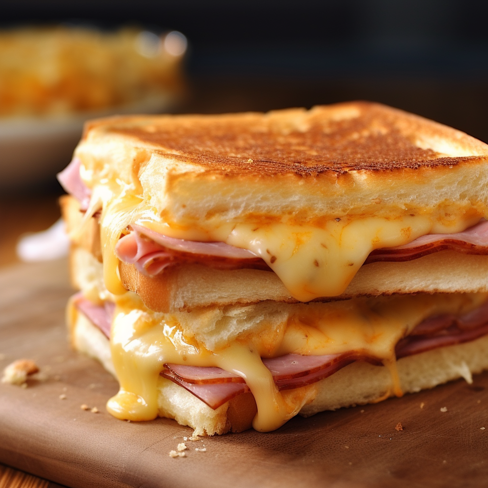

Ham and Cheese

A classic fast food sandwich made at home with ham, cheese, and a spicy sauce.
Ingredients
- 8 slices of deli ham
- 4 slices of cheddar cheese
- 4 hamburger buns
- 2 tbsp mayonnaise
- 1 tbsp dijon mustard
- 1 tbsp butter
- 2 tsp hot sauce
Recipe
- Mix together mayonnaise, dijon mustard, and hot sauce.
- Butter the inside of each bun and toast in a pan or toaster.
- Place 2 slices of ham on each bun, followed by a slice of cheese.
- Spread the sauce on the cheese and top with the other half of the bun.
- Cook in a pan over medium heat until cheese is melted and bread is toasted.
Main page